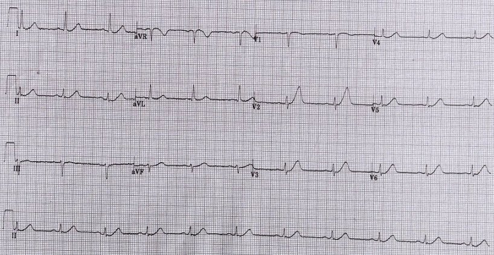

20/04/2016 — Một phụ nữ 37 tuổi đau ngực
Bản dịch tiếng Việt của bài "A 37 year old woman with Chest Pain" – Dr. Smith’s ECG Blog. Giữ nguyên toàn bộ 1 hình ảnh của bản gốc.
Tôi đã đăng một bài gồm 10 ca tương tự tại đây.
Đừng bỏ lỡ các bình luận ở cuối bài!
Tôi được gửi điện tâm đồ này kèm các thông tin sau:
“Một phụ nữ 37 tuổi, không có bệnh đồng mắc, không hút thuốc, không rõ rối loạn lipid máu và không có tiền sử gia đình mắc bệnh động mạch vành (CAD), đến khoa cấp cứu (ED) vì đau ngực vùng giữa ngực đã 5 giờ, không lan, tăng lên khi cử động hai tay và kèm khó thở (SOB). Cơn đau xảy ra sau một cuộc xung đột căng thẳng với người khác. Trước đây chị đã có những cơn tương tự khi tức giận hoặc căng thẳng.”
“Dấu hiệu sinh tồn: huyết áp 110/70, mạch 70 lần/phút, nhịp thở 18 lần/phút, độ bão hòa O2 98% khi thở khí trời (RA). Khám thực thể bình thường.”
Đây là điện tâm đồ:


Đây là câu trả lời của tôi:
“Tôi nhìn điện tâm đồ và lập tức nghĩ “Đây là tắc LAD cấp.” Điện tâm đồ này có giá trị chẩn đoán tắc LAD, nhưng thực ra chỉ đối với người có chuyên môn. Bạn hầu như sẽ không bao giờ gặp một điện tâm đồ như thế này mà lại là điện tâm đồ nền của bệnh nhân. Sóng T rất lớn so với QRS, biên độ QRS rất nhỏ, sóng T đối xứng và đầy đặn, có đoạn ST võng xuống ở I, II, V3 và V4. V3 lẽ ra phải có một chút ST chênh lên, nhưng thực tế lại có một chút ST chênh xuống.”
Những sóng này nên được xem là sóng T de Winter kín đáo.
Kết cục:
“Điện tâm đồ ghi lại không có thay đổi.”
“Xét nghiệm cho thấy men tim bình thường và troponin bình thường.
Chị được cho về sau khi tiêm bắp diclofenac 75 mg. Cơn đau đã giảm.
Bệnh nhân được cho về nhà, được trấn an và cho thuốc giảm đau.”
“12 giờ sau, bệnh nhân được phát hiện gục ngã tại nhà, không còn dấu hiệu sự sống. Gia đình từ chối khám nghiệm tử thi. Vì chị đã đến khoa cấp cứu của chúng tôi trong vòng 24 giờ trước khi tử vong, điện tâm đồ của chị đã được xem xét lại và 50% các bác sĩ chuyên khoa cấp cao (consultant — những bác sĩ thâm niên nhất của cơ sở) nói rằng điện tâm đồ không có bất thường nào. 50% còn lại nói rằng có sóng T tối cấp gợi ý nhồi máu cơ tim ở giai đoạn sớm.”
Trả lời của tôi:
“Rất tiếc khi nghe về kết cục này. Đây là một điện tâm đồ rất khó nhận ra đối với người không chuyên. Tôi hy vọng rằng blog này, với những ca như thế này, sẽ giúp những người khác học được về các dấu hiệu kín đáo kiểu này và ngăn ngừa những ca tương tự trong tương lai.”
Bình luận khác:
“Lẽ ra sẽ rất hữu ích nếu ghi một điện tâm đồ sau khi cơn đau đã giảm, để xem sóng T tối cấp có hồi phục hay không. Tôi sẽ không dựa vào việc không có thay đổi để yên tâm rằng đây KHÔNG phải thiếu máu cục bộ, vì nó quá bất thường để có thể là bất cứ điều gì khác. Nhưng nếu sóng T hồi phục (thay đổi) thì đó sẽ là bằng chứng khẳng định.”
Những điểm cần học:
1. Tất cả chúng ta đều phải học những dấu hiệu nguy cơ cao này của tắc mạch vành.
2. Sóng T tối cấp có một hình thái riêng biệt. Chúng giống như một khuôn mặt mà bạn phải nhận ra.
3. Không được tin vào troponin âm tính khi điện tâm đồ có hình ảnh thiếu máu cục bộ.
4. Hầu hết những “bỏ sót” như thế này sẽ không bao giờ bị coi là một “bỏ sót”. Bệnh nhân sẽ được nhập viện để “loại trừ nhồi máu cơ tim”, rồi sẽ được “khẳng định” nhồi máu, sẽ được chụp mạch vành muộn, và sẽ bị nhồi máu cơ tim thành trước đã hoàn tất. Hoặc bệnh nhân sẽ rung thất khi đang được theo dõi monitor trong bệnh viện rồi mới được đưa đi chụp mạch vành. Vì vậy, phần lớn những ca này sẽ là những cơ hội bị bỏ lỡ để cứu vớt cơ tim, chứ không dẫn đến tử vong tại nhà. Đây là tình huống với những ca sau:
Ten (10) Examples of Hyperacute T-waves in Lead V2 (a few in V3), due to acute LAD occlusion (Mười (10) ví dụ về sóng T tối cấp ở chuyển đạo V2 (một vài ca ở V3) do tắc LAD cấp)
Tôi nhận được một câu hỏi hay:
Vậy khi chúng ta chuyển sang các quy trình “loại trừ nhanh”, anh có nghĩ rằng lần đo troponin thứ hai nhiều khả năng đã cho thấy thay đổi không? Tôi đang cố gắng hiểu, nếu đây là một vấn đề cấp tính, thì các cơn tương tự trước đây có liên quan như thế nào, hay chúng chỉ là manh mối đánh lạc hướng (red herring).
Trả lời của tôi:
Không hẳn.
Ngay cả với troponin độ nhạy cao, vẫn sẽ có âm tính giả.
Không phải mọi trường hợp đau thắt ngực không ổn định đều sẽ được phát hiện bằng troponin độ nhạy cao (hs-troponin) trong tương lai. Bạn vẫn cần phải biết đọc điện tâm đồ.
Đối với bệnh nhân này:
1) động mạch có thể tự mở thông trở lại trước khi có bất kỳ tế bào nào chết (tức là trước khi troponin tăng). Rồi sau đó, tổn thương có thể tắc lại và gây tử vong.
Hoặc là
2) nếu động mạch không tái tưới máu, thì đến lúc bạn có kết quả troponin lần thứ hai, phần lớn tổn thương đã xảy ra rồi.
Bạn phải nhận ra được những hình ảnh này, nếu không bạn sẽ bỏ lỡ một cơ hội tạo ra khác biệt lớn.
Steve Smith
Thêm một số bình luận và câu trả lời mà tôi muốn giới thiệu:
Bình luận: Tiếc là khi không có khám nghiệm tử thi, hoặc thêm thông tin (có thể đã không được đưa vào bài viết cho ngắn gọn), tôi cho rằng không thể khẳng định chắc chắn rằng ở đây đã bỏ sót một nhồi máu cơ tim. Có thể nguyên nhân tử vong là quá liều, ma túy, hoặc một yếu tố nào khác. Việc gia đình từ chối khám nghiệm tử thi trong tình huống này khiến tôi nghĩ rằng có thể có điều gì khác đã tác động.
Trả lời: Nhưng điện tâm đồ có giá trị chẩn đoán tắc LAD. Đó là nguyên nhân tử vong có khả năng cao hơn hẳn mọi nguyên nhân khác.
Bình luận: Theo định nghĩa thì sóng T không phải là tối cấp, và đây là một tình huống khó. Nhìn hồi cứu thì dễ nói rằng siêu âm tim lẽ ra sẽ hữu ích, nhưng có lẽ tôi cũng sẽ làm như vậy, ngoại trừ việc ghi lại điện tâm đồ và đo troponin hai lần
Trả lời: Chúng đúng là sóng T tối cấp. Không có định nghĩa nào cả. Bạn chỉ cần học cách nhận ra nó. Phủ nhận nó sẽ chỉ khiến bạn gặp rắc rối vào một ngày nào đó, và đó là lý do tôi đang cố gắng dạy bạn. Tôi đã không nhìn hồi cứu. Tôi xem điện tâm đồ trước khi biết bất kỳ kết cục nào và biết ngay rằng đó là tắc LAD. Nhiều độc giả nói với tôi rằng ca này hiển nhiên, thậm chí không hề kín đáo. Thay vì chống lại nó, hãy cố gắng học hình thái này. Nó có thể cứu một bệnh nhân của bạn. Hãy học. Đừng khép kín tư duy.
Steve Smith (ký tên)
Cuối cùng, bình luận xuất sắc của Ken Grauer:
ECG Interpretationngày 20 tháng Tư năm 2016 lúc 5:30 chiều
CẢM ƠN Dr. Stephen Smith đã đăng ca bệnh có tính minh họa rất cao này. Gần đây có khá nhiều bản ghi tương tự như thế này được đăng trên nhiều diễn đàn điện tâm đồ khác nhau (mỗi bản có chút khác biệt so với bản kia) — nhưng TẤT CẢ đều có hầu như CÙNG một dấu hiệu — đó là sóng T ở chuyển đạo V2 (và ở mức độ ít hơn ở chuyển đạo V3) cao không tương xứng so với biên độ của phức bộ QRS ở các chuyển đạo này. Và những câu trả lời mà tôi thấy, ngay cả từ các bác sĩ lâm sàng có kinh nghiệm, cũng cho thấy cùng một sự dao động đáng kinh ngạc như Dr. Smith đã nêu trong Blog này — đó là một số bác sĩ lâm sàng nhận ra đúng bản ghi này là một biến thể de Winter với tắc cấp (hoặc sắp tắc cấp) LAD đoạn gần — còn những người khác (tiếc thay là quá nhiều bác sĩ lâm sàng khác) lại gọi những dấu hiệu đó là “bình thường”.
ĐÂY là một bản ghi có lẽ nên được cho TẤT CẢ các nhân viên lâm sàng (bác sĩ và không phải bác sĩ) — những người được yêu cầu phân tích điện tâm đồ 12 chuyển đạo trong tình huống cấp — xem, vừa để giảng dạy và có lẽ vừa để đánh giá khả năng đọc điện tâm đồ … Theo tôi, đây là một ca KHÔNG được phép bỏ sót vì: i) bệnh nhân đến khoa cấp cứu với đau ngực 5 giờ — điều này tự nó đã phải hạ thấp đáng kể ngưỡng của bạn trong việc phân định “bình thường” với “bất thường”; ii) sóng T ở chuyển đạo V2 cao gần gấp đôi biên độ QRS ở chuyển đạo này — và độ rộng của sóng T này tương đương với biên độ QRS ở chuyển đạo V2 này. Không đời nào đây là bình thường ở một bệnh nhân mới đau ngực.
Các dấu hiệu ở nhiều chuyển đạo khác mà Dr. Smith mô tả thì kín đáo hơn, nhưng với bức tranh được mô tả ở i) và ii), tất cả chúng đều ủng hộ chẩn đoán sóng T kiểu de Winter.
Việc phụ thuộc vào troponin (kể cả loại troponin có độ nhạy cao nhất) không có chỗ đứng trong một ca như thế này. Tôi sẽ vui mừng nếu troponin ban đầu âm tính — vì điều đó có nghĩa là chúng ta đã nhận ra tắc LAD cấp này kịp thời để cải thiện đáng kể tiên lượng.
Hầu hết các ca sóng T tối cấp thành trước sẽ không rõ rệt như ca này. Nhưng chú ý đến những điểm cần học của ca này có thể giúp giảm rõ rệt khả năng bỏ sót: i) Khi bệnh nhân đến khoa cấp cứu vì mới đau ngực — người ta phải xem điện tâm đồ của họ kỹ hơn nhiều; ii) Hãy khắc sâu trong đầu hình ảnh của sóng ST-T mà chúng ta thấy ở chuyển đạo V3. Sóng ST-T ở V3 không rõ ràng như ở V2, nhưng sóng T vẫn rõ ràng cao hơn, phình to hơn ở đỉnh và rộng hơn ở đáy một cách không tương xứng so với mức đáng lẽ phải có khi xét biên độ QRS ở chuyển đạo này (Ngay cả khi không có V2, điện tâm đồ này cũng đáng lo ngại lớn; còn có thêm V2 thì điện tâm đồ này phải gây báo động); iii) Hãy luyện mắt để xem thật kỹ “các chuyển đạo khác” trên bản ghi nhằm tìm “các hình ảnh”. Hầu như mọi chuyển đạo trên bản ghi này (có lẽ trừ aVL) đều có ít nhất một bất thường kín đáo, mà khi gộp lại cùng bối cảnh bệnh sử mới đau ngực + bất thường rõ ràng ở V2,V3 sẽ càng củng cố thêm tính cấp tính cho đến khi chứng minh được điều ngược lại.
CẢM ƠN anh đã đăng ca bệnh này.